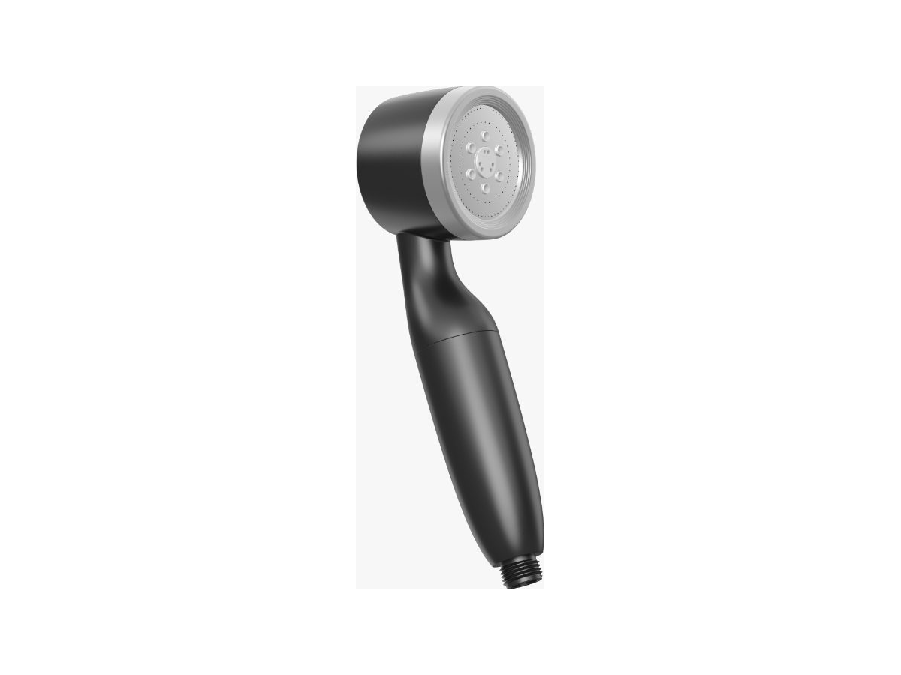

Douche
DoucheRP-S01
Filtre de douche à main
SKU: RP-S01
MOQ : à confirmer lors de la demande
Accueil/Produits/Filtres de douche/ RP-S07

Filtres de douche
Filtre de douche multimode (JK-C1) — quatre modèles
RP-S07, RP-S08, RP-S05 et RP-S09 sont quatre modèles de la même famille de filtres de douche multimodes. RP-S07 (blanc-violet), RP-S08 (beige) et RP-S05 (noir) sont le même modèle en trois couleurs ; RP-S09 (beige, bague dorée) utilise le même moule avec une cartouche composite coton PP + vitamine C. Les spécifications sont confirmées par modèle et par commande.
Quatre modèles — coter aussi commeRP-S08 (beige),RP-S05 (noir)ouRP-S09 (vitamine C).
La tension / fréquence est configurable selon le pays de destination. Les autres configurations sont confirmées par commande.
RP-S07 est un filtre de douche multimode (JK-C1) avec quatre modèles de la même famille. RP-S07 (blanc-violet), RP-S08 (beige) et RP-S05 (noir) sont le même modèle en trois couleurs ; RP-S09 (beige, bague dorée) utilise le même moule avec une cartouche composite coton PP + vitamine C. Les quatre ont 7 modes de jet, un réglage continu à 360° et un raccordement G1/2. Pour RP-S07 / RP-S08 / RP-S05, les valeurs catalogue sont une pression de service de 0,1 à 0,4 MPa, une température de l’eau de 5 à 60°C, un débit d’eau de 5 à 7 L/min et une durée de vie de la cartouche d’environ 3 mois ; les valeurs de RP-S09 sont confirmées par commande. Les trois premiers modèles offrent trois options de filtre : ACF, PP + arôme vitamine C ou coton PP.
Quelle est la quantité minimale de commande ?
La première commande est de 200 unités par modèle, et les réassorts sont de 500 unités.
Puis-je commander un échantillon avant une commande en volume ?
Oui. Les échantillons sont prêts en 15 jours, et les frais d'échantillon sont remboursés sur votre première commande en gros. Les commandes en gros prennent 40 jours après approbation de l'échantillon et sont expédiées FOB Shenzhen.
Comment choisir entre les quatre modèles ?
RP-S07, RP-S08 et RP-S05 sont le même modèle en trois couleurs (blanc-violet, beige, noir). RP-S09 est le modèle à la vitamine C sur le même moule, avec une cartouche composite coton PP + vitamine C. Coter comme RP-S07 et préciser le modèle.
Survolez l'image d'une variante pour voir ses spécifications. Sur écran tactile, touchez une image.



Spécifications complètes de chaque variante, côte à côte. Le tableau des spécifications ci-dessous montre les valeurs de RP-S07.
| Spécification | RP-S07-1 — blanc-violet (JK-C1) | RP-S07-2 — beige (JK-C2) | RP-S07-3 — noir (JK-C1) | RP-S07-4 — vitamine C (JK-C3) |
|---|---|---|---|---|
| Couleur | Blanc-violet | Beige | Noir | Beige, anneau doré |
| Cartouche | 3 options de filtre : ACF / PP + arôme vitamine C / coton PP | 3 options de filtre : ACF / PP + arôme vitamine C / coton PP | 3 options de filtre : ACF / PP + arôme vitamine C / coton PP | Coton PP composite + vitamine C |
| Modes de jet | 7 | 7 | 7 | 7 |
| Commande | Réglage continu 360° | Réglage continu 360° | Réglage continu 360° | Réglage continu 360° |
| Raccordement | G1/2 | G1/2 | G1/2 | G1/2 |
| Pression de service | 0.1-0.4 MPa | 0.1-0.4 MPa | 0.1-0.4 MPa | À confirmer par commande |
| Température de l’eau | 5-60°C | 5-60°C | 5-60°C | À confirmer par commande |
| Débit d’eau | 5-7 L/min | 5-7 L/min | 5-7 L/min | À confirmer par commande |
| Durée de vie de la cartouche | Environ 3 mois | Environ 3 mois | Environ 3 mois | À confirmer par commande |
La pression de service, la température, le débit et la durée de vie de la cartouche pour RP-S07 / RP-S08 / RP-S05 sont les valeurs catalogue de ce modèle (telles qu’indiquées sur RP-S05) ; les valeurs de RP-S09 sont confirmées par commande.
6 lignes de spécifications du catalogue ROPureOEM.
| Modes de jet | 7 |
|---|---|
| Commande | Réglage continu 360° |
| Raccordement | G1/2 |
| Cartouche | À confirmer par commande |
| Débit / pression / température | À confirmer par commande |
| Durée de vie de la cartouche / dimensions | À confirmer par commande |
Les spécifications sont tirées du catalogue ROPureOEM. Lorsqu'une valeur n'est pas encore confirmée, elle est indiquée comme « Confirmé par commande » — nous ne publions pas de chiffres non confirmés.
DoucheFiltre de douche à main
SKU: RP-S01
MOQ : à confirmer lors de la demande
 Douche
DoucheFiltre de douche rectangulaire
SKU: RP-S03
MOQ : à confirmer lors de la demande
 Douche
DoucheFiltre de douche portable
SKU: RP-S10
MOQ : à confirmer lors de la demande
 Douche
DouchePréfiltre de douche en ligne
SKU: RP-S11
MOQ : à confirmer lors de la demande